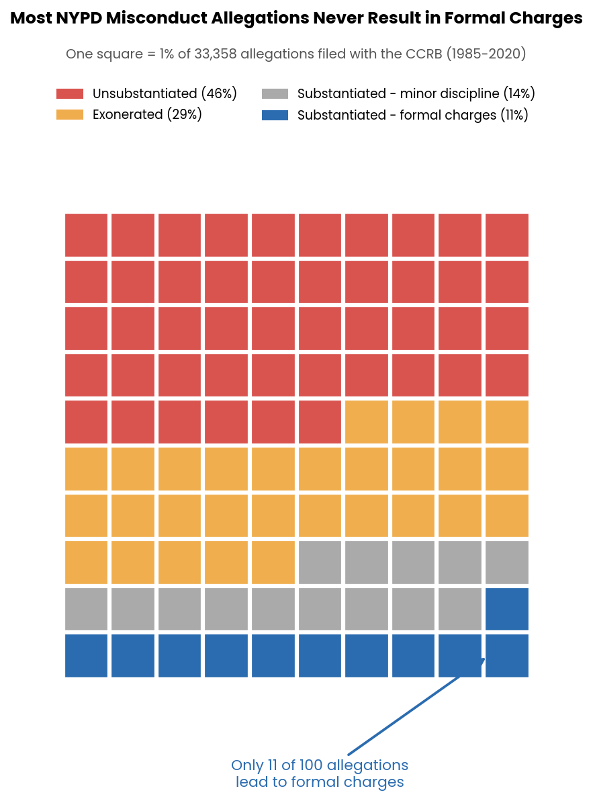
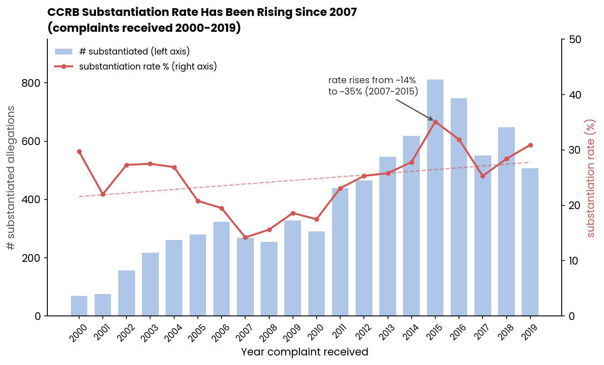

Proposition: NYPD officers face little meaningful accountability. The vast majority of civilian misconduct complaints are never substantiated.
FOR the Proposition

Design Decisions and Rationale
- Waffle chart constructed with numpy reshape and imshow [Earnestness: +1]. I selected a 10 by 10 waffle chart because it provides an immediate sense of proportion. The visual density of the red and orange categories contrasts sharply with the small number of blue squares. The layout requires more effort to implement than a bar chart but produces a clearer and more intuitive reading experience. The method accurately encodes the data.
- Separating formal charges from minor discipline [Earnestness: 0]. I separated substantiated allegations into two outcomes. This is analytically valid because the consequences for officers differ. The decision also draws more attention to the smaller category of formal charges. The distinction is real, but the emphasis is a framing choice.
- Annotation highlighting the blue squares [Earnestness: +0.5]. The annotation directs the reader to the small set of allegations that resulted in formal charges. The statement is accurate and descriptive. The wording highlights the low count and therefore shapes interpretation.
- Color palette with dominant red and isolated blue [Earnestness: +0.5]. Red and blue create a strong contrast that makes the small blue cluster visually distinct. The palette has semantic associations that can influence perception. The colors are not misleading, but they are not entirely neutral.
- Using allegations rather than complaints as the denominator [Earnestness: +1]. The CCRB records multiple allegations within a single complaint. Using allegations increases the total count and reduces the relative share of substantiated outcomes. I state this choice explicitly in the caption. The decision is defensible but does shape the viewer’s perception of scale.
AGAINST the Proposition

Design Decisions and Rationale
- Restricting the dataset to 2000–2019 [Earnestness: -1]. The full dataset spans 1985 through 2020. I limited the visualization to 2000 through 2019. This removes early years with low counts and high variance as well as 2020, which contains only four records. The selected window produces a smoother upward trend. Without an external justification tied to policy changes or data quality, this is a selective omission.
- Dual y-axis for rates and counts [Earnestness: -0.5]. Presenting counts and rates on the same chart allows the two trends to visually reinforce each other. This can suggest a stronger narrative than what would appear in a separated display. The technique is common but has persuasive effects.
- Linear trendline generated with np.polyfit [Earnestness: +1]. The trendline is calculated directly from the data and accurately reflects the direction of change. The method is transparent and mathematically sound. The trendline does not correct for the selective date range.
- Annotation tied to the lowest and highest points [Earnestness: -1]. The annotation highlights the increase from 2007 to 2015. These years correspond to the minimum and maximum rates in the selected window. This choice increases the reported magnitude of improvement. It is accurate but selectively framed.
- Neutral color palette and minimalist styling [Earnestness: +0.5]. The light blue bars and restrained design create an impression of neutrality and objectivity. This aesthetic reduces attention to the more consequential design decisions described above.
Final Reflection
This assignment demonstrated how easily a single dataset can support two coherent and seemingly credible visual arguments. Neither visualization contains fabricated values. The differences arise from decisions about framing, emphasis, and scope. The first visualization relies on proportion, color, and annotation to highlight the scarcity of formal charges. The second visualization depends more heavily on data selection. The restricted date range alters the perceived trend in a way that would not be visible to a casual reader.
These observations suggest that the ethics of visualization involve more than accurate encoding. They involve transparency about decisions that influence interpretation. Titles, annotations, category splits, and axis choices all direct the reader toward particular conclusions. The threshold between persuasive and misleading design depends on whether a fully informed reader would consider the representation fair. A strong title or a salient color choice may still be acceptable if the underlying structure of the data is shown honestly. A selective temporal window that materially alters the trend is more difficult to justify without explicit explanation. Ethical visualization therefore requires attention to both methodological accuracy and the clarity of disclosure.